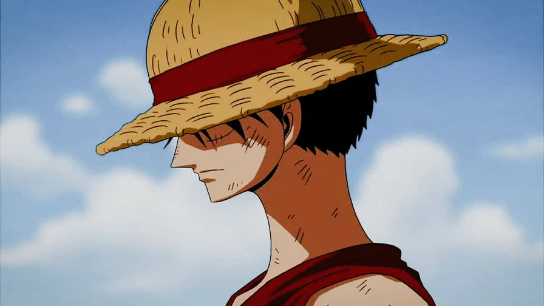
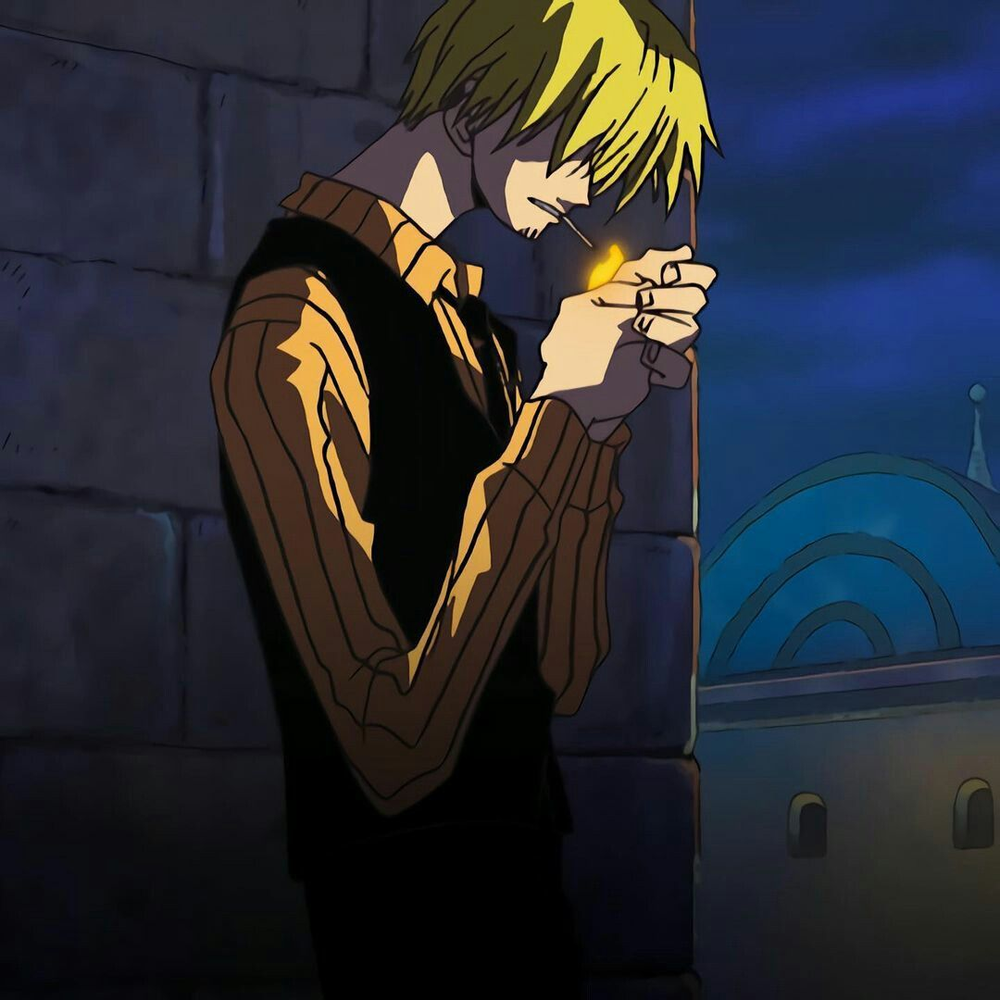

One Piece is a highly acclaimed and best-selling Japanese manga and anime franchise created by Eiichiro Oda. It follows the adventures of Monkey D. Luffy and his diverse crew as they journey across the seas in search of the ultimate treasure, the "One Piece," to become the next King of the Pirates.

Discription
CAPTAIN: The optimistic captain with a rubber body after eating the Gum-Gum Fruit (revealed to be the Human-Human Fruit, Model: Nika). His ultimate goal is to find the One Piece and become the King of the Pirates.

Discription
RIGHT HAND MAN: A formidable swordsman who uses a unique three-sword style and aims to become the world's greatest swordsman. He was the first person to join Luffy's crew.

Discription
LEFT HAND MAN: A passionate chef and a master martial artist who uses only his legs to fight, to protect his hands for cooking. He is searching for the "All Blue," a mythical sea where fish from all over the world gather.
Discription
NAVIGATOR: The crew's skilled navigator and a cunning cat burglar, who initially steals from pirates to buy back her village from a brutal fish-man pirate. Her dream is to draw a complete map of the world.
Discription
ARCHAEOLOGIST: An archaeologist and the sole survivor of the government-sanctioned massacre of Ohara. She ate the Flower-Flower Fruit, allowing her to sprout body parts on any surface. Her goal is to uncover the true history of the world, a period known as the Void Century.